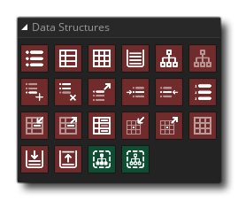

In Spielen müssen Sie Informationen oft genau und geordnet speichern. Beispielsweise müssen Sie möglicherweise Listen mit Elementen speichern, die eine Person enthält, oder Sie möchten möglicherweise ein Raster von Orten speichern, die noch besucht werden müssen. Jetzt können Sie mehrere Variablen dafür verwenden, aber wenn Sie kompliziertere Operationen durchführen möchten, wie das Sortieren der Daten oder die Suche nach einem bestimmten Element, müssen Sie große Blöcke von Action-Block-Code schreiben, die langsam ausgeführt werden können, schwierig Debugging und ein echter Schmerz zum Schreiben!
Um dem entgegenzuwirken, verfügt GameMaker Studio 2 über eine Reihe von integrierten Datenstrukturen, auf die über spezielle Funktionen zugegriffen werden kann. Es gibt vier verschiedene Arten von Datenstrukturen, die durch Ziehen und Ablegen verfügbar sind (es gibt sechs, wenn Sie GML verwenden ), wobei jedes seine eigenen Vor- und Nachteile hat, je nachdem, welche Art von Informationen Sie speichern möchten und wie Sie diese manipulieren möchten später - die vier Arten sind:
Listen Eine Liste ist eine Datenstruktur, die Informationen sequentiell speichert, wenn sie hinzugefügt werden. Listenindizes beginnen bei 0 und gehen für jedes Element, das am Ende der Liste hinzugefügt wird, nach oben, obwohl Sie auch Daten an einer anderen Position als der letzten einfügen können. Im Gegensatz zur Stack-Datenstruktur (siehe unten) können Sie jederzeit auf die Daten aus einem beliebigen Index der Liste zugreifen. Karten Die Kartendatenstruktur ist ein außerordentlich nützliches wie es Sie speichern Schlüssel-Wert - Paare können. Zum Beispiel kann ein Charakter in Ihrem Spiel eine Menge verschiedener Gegenstände (Schlüssel) haben und für jeden einzelnen Gegenstand kann er eine Anzahl von ihnen haben (Werte), wie in einem RPG, wo Sie 10 Gesundheitstränke, 5 Manatränke und 100 Gold. Maps verwalten solche Paare alle zusammen an einem Ort, und Sie können Paare zu der Karte hinzufügen und nach dem Wert suchen, der bestimmten Schlüsseln ebenso mit einigen einfachen Funktionen entspricht. Maps werden nicht in irgendeiner (erkennbaren) Weise sortiert, was bedeutet, dass Sie, um einen bestimmten Schlüssel zu finden, das ganze Ding durchlaufen müssen (was sehr langsam ist), und es gibt auch keine Möglichkeit, zwei Schlüssel zu halten, die gleich sind können Sie einem Schlüssel zwei Werte zuweisen. Gitter Ein Raster ist ein zweidimensionales Array von Werten, in dem Sie seine Breite und Höhe definieren. Dadurch wird die Gesamtzahl der Gitterzellen im Gitter festgelegt (Breite und Höhe multipliziert), und diese Zellen werden dann zum Speichern verschiedener Datenwerte verwendet, bei denen es sich um zulässige Datentypen handeln kann. Mit diesem Strukturtyp können Sie den Wert von Zellen im Raster festlegen und abrufen, indem Sie die Position x (Spalte) und y (Zeile) angeben (beide Zeilen und Spalten beginnen bei 0 und gehen bis zur Rasterbreite - 1 und) die Gitterhöhe -1). Beim Zugriff auf Grid-Datenstrukturen sollten Sie immer versuchen, ganzzahlige Werte für die Zellenposition zu verwenden, und alle nicht-ganzzahligen Indizes werden von GameMaker Studio 2 nicht GameMaker Studio 2 wenn Sie dies nicht tun. Wenn Sie das nicht benötigen, müssen Sie die Rundung selbst durchführen, bevor Sie den Index übergeben, den Sie überprüfen möchten. Stapel Eine Stapeldatenstruktur ist eine sogenannte LIFO-Struktur (last-in-first-out). Sie können Werte auf einen Stapel schieben und sie wieder entfernen, indem Sie sie vom Stapel nehmen, und der Wert, der zuletzt auf den Stapel geschoben wurde, wird als erstes wieder aus dem Stapel herausgeholt (denken Sie nur an einen Stapel Münzen, wo jeder Münzen, die Sie hinzufügen, müssen zuerst wieder entfernt werden, bevor Sie zu den restlichen Münzen gelangen. Stacks werden häufig verwendet, wenn Interrupts behandelt werden oder wenn rekursive Funktionen verwendet werden, oder sogar wenn eine rudimentäre KI für Ihre Spiele erstellt wird.


Im Grunde arbeiten alle Datenstrukturen auf die gleiche Weise - Sie erstellen eine Datenstruktur und speichern ihren Indexwert in einer Variablen. Anschließend verwenden Sie diesen Index, um in allen weiteren Funktionsaufrufen, die Operationen an ihm ausführen können, auf die Datenstruktur zu verweisen. Sobald Sie fertig sind, zerstören Sie die Datenstruktur erneut, um sie aus dem Speicher zu entfernen. Sie können beliebig viele Strukturen zur gleichen Zeit verwenden, und alle Strukturen können sowohl Strings als auch reelle Werte speichern.
Die Datenstrukturbibliothek hat die folgenden Aktionen: